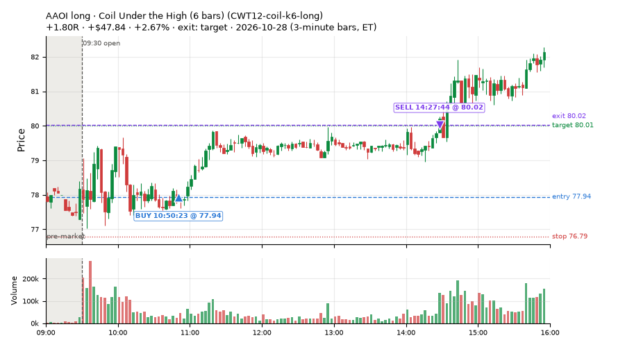
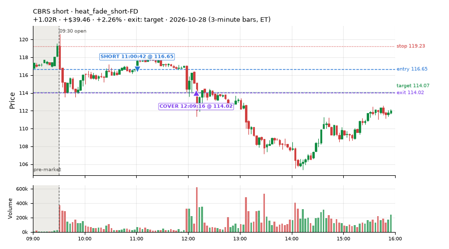
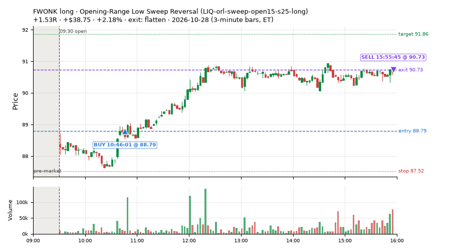
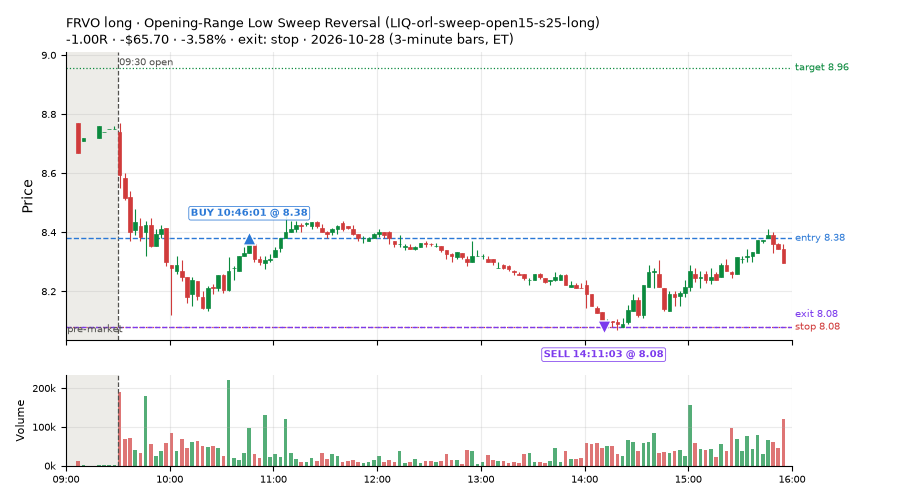
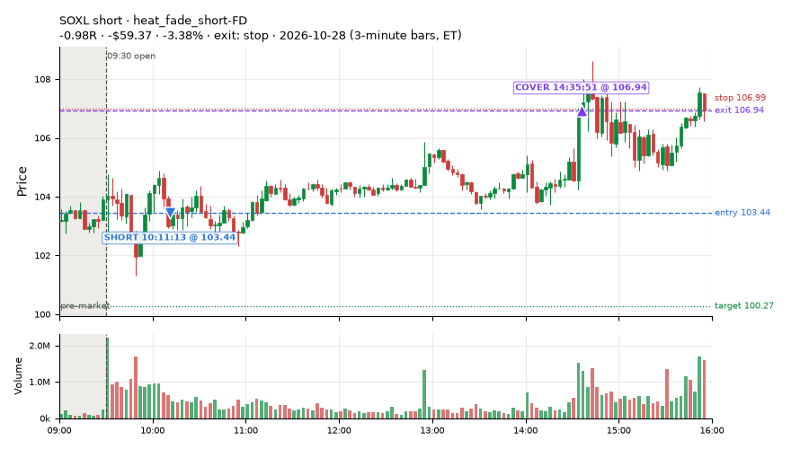
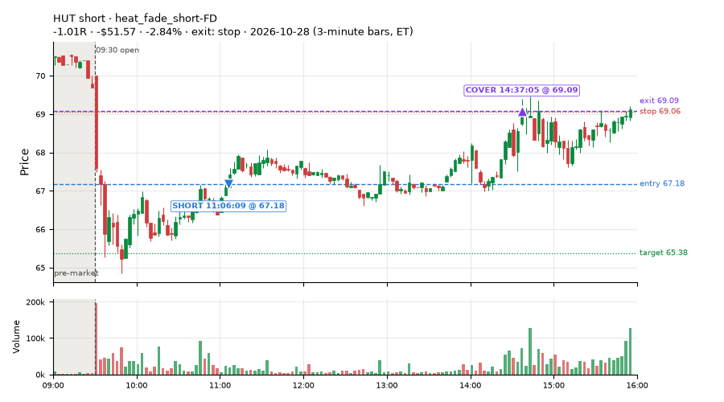
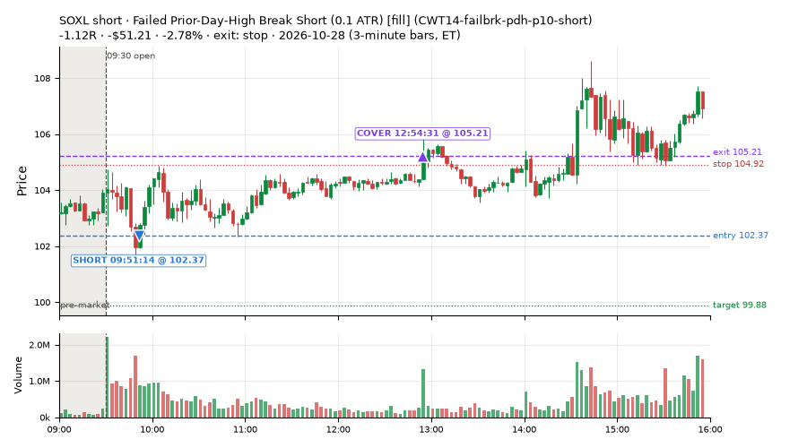
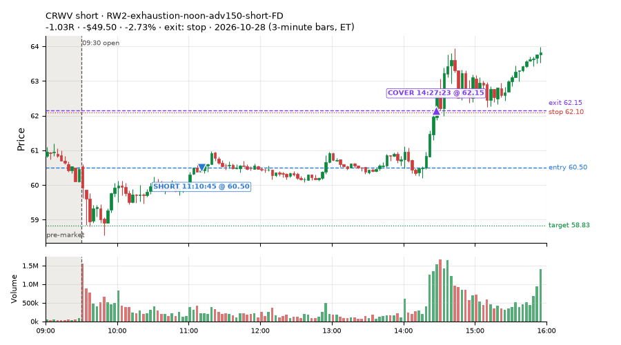

298 trades · win rate 49% · P/L $-979.61
PROBATION: no live setup has passed both locked test periods. 10 owner-directed setups added 2026-10-08 (MarcoFlow top 5 + 5 new), untested live. RW6G1 (RW6 + VWAP band guard) added 2026-10-09, probation.

| Symbol | Setup | Side | In | Out | Entry | Exit | Exit reason | % gained | P/L |
|---|---|---|---|---|---|---|---|---|---|
| AAOI | Coil Under the High (6 bars) (CWT12-coil-k6-long) | long | 10:50 | 14:27 | 77.94 | 80.02 | target | +2.67% | $47.84 |
| CBRS | heat_fade_short-FD | short | 11:00 | 12:09 | 116.65 | 114.02 | target | +2.26% | $39.46 |
| FWONK | Opening-Range Low Sweep Reversal (LIQ-orl-sweep-open15-s25-long) | long | 10:46 | 15:55 | 88.79 | 90.73 | flatten | +2.18% | $38.75 |
| Symbol | Setup | Side | In | Out | Entry | Exit | Exit reason | % lost | P/L |
|---|---|---|---|---|---|---|---|---|---|
| FRVO | LIQ-orl-sweep-open15-s25-long | long | 10:46 | 14:11 | 8.38 | 8.08 | stop | -3.58% | $-65.70 |
| SOXL | heat_fade_short-FD | short | 10:11 | 14:35 | 103.44 | 106.94 | stop | -3.38% | $-59.37 |
| HUT | heat_fade_short-FD | short | 11:06 | 14:37 | 67.18 | 69.09 | stop | -2.84% | $-51.57 |
| SOXL | CWT14-failbrk-pdh-p10-short | short | 09:51 | 12:54 | 102.37 | 105.21 | stop | -2.78% | $-51.21 |
| CRWV | RW2-exhaustion-noon-adv150-short-FD | short | 11:10 | 14:27 | 60.50 | 62.15 | stop | -2.73% | $-49.50 |








Signal to fill: median 1s, 90th percentile 3s (298 trades). Bars close each minute; the order follows the bar close.
Best excursion (MFE): median 0.43R; worst (MAE) median 0.90R. 31% of trades never got +0.25R in our favour; 8 reached +1R and still closed at or below 0.
| Symbol | Setup | Best R | Worst R | Closed R |
|---|---|---|---|---|
| SNX | MF1-945-flowsell-vwapup-FD | +1.85 | -1.02 | -1.35 |
| SEDG | CWT09-gapdn-vwaploss-g5-short | +1.78 | -1.09 | -1.01 |
| A | CWT12-coil-k6-long | +1.45 | -1.15 | -1.15 |
| MCD | CWT12-coil-k6-long | +1.20 | -1.05 | -1.05 |
| NTSK | CWT12-coil-k6-long | +1.03 | -1.25 | -1.18 |
| Entry time | Trades | Win | Avg R | P/L |
|---|---|---|---|---|
| 09:50-10:30 | 152 | 45% | -0.35 | $-732.78 |
| 10:30-11:30 | 102 | 61% | +0.03 | $-52.80 |
| 11:30-13:00 | 30 | 30% | -0.54 | $-251.91 |
| 13:00-14:00 | 3 | 100% | +0.86 | $39.91 |
| 14:00-16:00 | 11 | 45% | +0.23 | $17.97 |
| Setup | Trades | Win | Avg R | Adj R (net of SPY) | P/L |
|---|---|---|---|---|---|
| Gap-Down Bounce Rejection Short (5% gap) (CWT09-gapdn-bounce-g5-lowerhalf-short) | 2.0 | 0% | -0.89 | -0.88 | $-66.49 |
| Gap-Down VWAP Loss Short (5% gap) (CWT09-gapdn-vwaploss-g5-short) | 1.0 | 0% | -1.01 | -0.96 | $-15.75 |
| Coil Under the High (6 bars) (CWT12-coil-k6-long) | 22.0 | 36% | -0.17 | -0.45 | $33.99 |
| Stretched Above VWAP Fade (CWT13-vwapstretch-z05-short) | 4.0 | 75% | +0.28 | +0.21 | $25.08 |
| Failed Opening-Range-Low Break Long (0.05 ATR) [fill] (CWT14-failbrk-orl-p05-long) | 33.0 | 67% | -0.04 | -0.21 | $-9.32 |
| Failed Opening-Range-Low Break Long (0.05 ATR, low volume) [fill] (CWT14-failbrk-orl-p05-lowvol-long) | 27.0 | 59% | -0.16 | -0.27 | $-82.20 |
| Failed Opening-Range-Low Break Long (0.1 ATR) [fill] (CWT14-failbrk-orl-p10-long) | 22.0 | 73% | +0.03 | -0.09 | $5.64 |
| Failed Opening-Range-Low Break Long (low volume) (CWT14-failbrk-orl-p10-lowvol-long) | 18.0 | 78% | +0.17 | +0.11 | $6.05 |
| Failed Prior-Day-High Break Short (0.05 ATR, low volume) [fill] (CWT14-failbrk-pdh-p05-lowvol-short) | 31.0 | 58% | -0.20 | -0.06 | $-62.47 |
| Failed Prior-Day-High Break Short (low volume) (CWT14-failbrk-pdh-p10-lowvol-short) | 13.0 | 77% | +0.16 | +0.15 | $59.93 |
| Failed Prior-Day-High Break Short (0.1 ATR) [fill] (CWT14-failbrk-pdh-p10-short) | 31.0 | 16% | -0.81 | -0.34 | $-321.51 |
| Opening-Range Low Sweep Reversal (LIQ-orl-sweep-open15-s25-long) | 6.0 | 33% | +0.03 | -0.06 | $-29.22 |
| MF1-945-flowsell-vwapup-FD | 6.0 | 33% | -0.44 | -0.26 | $-14.70 |
| NS2-sma50break-overbought-short-FD | 6.0 | 50% | +0.44 | +0.46 | $31.81 |
| RW2-exhaustion-noon-adv150-short-FD | 18.0 | 39% | -0.34 | -0.29 | $-187.25 |
| RW6-ns2-up3-short-FD | 1.0 | 0% | -0.13 | -0.00 | $-4.17 |
| ST1-ordn-long-pm-t05s1-FD | 2.0 | 100% | +0.20 | +0.18 | $14.70 |
| ST2-slope20up-long-am-t05s1-FD | 10.0 | 60% | -0.13 | -0.13 | $-46.41 |
| Midday Gap-Up Dip Buy (heat_fade_long) failed Apr-Jun holdout: -0.138R/trade over 1043 trades | 2.0 | 100% | +0.92 | +0.87 | $39.66 |
| heat_fade_long-FD | 8.0 | 75% | +0.42 | +0.23 | $133.89 |
| Morning Bounce Fade (heat_fade_short) failed Apr-Jun holdout: -0.015R/trade over 1420 trades | 6.0 | 0% | -0.84 | -0.69 | $-129.65 |
| heat_fade_short-FD | 29.0 | 17% | -0.64 | -0.53 | $-361.21 |
Market direction (SPY, beta 1) accounted for $-148.39 of today's $-979.61; the rest ($-831.22) came from the setups themselves. Avg R net of SPY: -0.19 (incl. a hedge leg's cost; report only).
23 setups live today. Today: 758 signals, 298 taken, 31 lost because another setup held the symbol (4%). Since 2026-10-21 (6 sessions): 3910 signals, 1785 taken, 208 lost to other setups (5%). Peak open positions today 150 of 200 slots. Earnings blackout removed 1241 symbols before scanning.
Simulated playing time (not live): 2116 what-if trades of signals not taken, avg -0.05R, 59% winners; of them 208 lost to another setup (avg -0.14R).
Crowded out: NS2-sma50break-overbought-short, heat_fade_long, heat_fade_long-FD · Starved: MF1-945-flowsell-vwapup-FD, heat_fade_short, heat_fade_short-FD
| Prio | Setup | Today sig / taken | Sessions | Signals / taken / trades | Taken/day | Expected/day | Lost to other setups | Lost to (setup n) | Top skip reasons | SIMULATED: not-taken n / avg R / win | Verdict |
|---|---|---|---|---|---|---|---|---|---|---|---|
| 1 | ST1-ordn-long-pm-t05s1-FD ST1-ordn-long-pm-t05s1-FD | 4 / 2 | 6 | 10 / 6 / 6 | 1.00 | 3.49 | 0 | – | spread / quote / size 3, broker rejected 1 | 4 / +0.03R / 50% | slow 5.0 entries/week; ~12 weeks to 60 trades |
| 2 | RW6-ns2-up3-short-FD RW6-ns2-up3-short-FD | 3 / 1 | 6 | 32 / 14 / 14 | 2.33 | 7.12 | 0 | – | daily loss cap 9, not shortable / shorts off 5, spread / quote / size 4 | 18 / +0.36R / 78% | slow 11.7 entries/week; ~5 weeks to 60 trades |
| 3 | NS2-sma50break-overbought-short-FD NS2-sma50break-overbought-short-FD | 9 / 6 | 6 | 62 / 29 / 29 | 4.83 | 17.08 | 0 | – | daily loss cap 19, not shortable / shorts off 7, spread / quote / size 7 | 33 / +0.35R / 70% | ok 24.2 entries/week |
| 4 | Big Gainer Average Reclaim Fade NS2-sma50break-overbought-short | 2 / 0 | 6 | 31 / 6 / 6 | 1.00 | 5.74 | 19 | NS2-sma50break-overbought-short-FD 19, RW6-ns2-up3-short-FD 6 | symbol held by another setup 19, not shortable / shorts off 3, spread / quote / size 3 | 25 / -0.04R / 52% | crowded-out 19 of 31 signals (61%) lost to setups already holding the symbol |
| 5 | MF1-945-flowsell-vwapup-FD MF1-945-flowsell-vwapup-FD | 13 / 6 | 6 | 65 / 28 / 28 | 4.67 | 23.94 | 1 | CWT12-coil-k6-long 1 | spread / quote / size 16, daily loss cap 14, not shortable / shorts off 6 | 37 / -0.33R / 32% | starved 4.67 entries/day vs ~23.94 expected |
| 6 | ST2-slope20up-long-am-t05s1-FD ST2-slope20up-long-am-t05s1-FD | 11 / 10 | 6 | 71 / 55 / 55 | 9.17 | 24.03 | 9 | heat_fade_short-FD 8, heat_fade_short 1 | symbol held by another setup 9, spread / quote / size 7 | 16 / -0.16R / 50% | ok 45.8 entries/week |
| 7 | Midday Gap-Up Dip Buy heat_fade_long | 5 / 2 | 6 | 24 / 15 / 15 | 2.50 | 30.36 | 6 | heat_fade_long-FD 5, heat_fade_short-FD 1 | symbol held by another setup 6, spread / quote / size 3 | 9 / +0.46R / 78% | crowded-out 6 of 24 signals (25%) lost to setups already holding the symbol |
| 8 | Opening-Range Low Sweep Reversal LIQ-orl-sweep-open15-s25-long | 8 / 6 | 6 | 107 / 79 / 79 | 13.17 | – | 8 | CWT14-failbrk-orl-p10-long 7, CWT14-failbrk-orl-p05-lowvol-long 7, CWT14-failbrk-orl-p10-lowvol-long 6 | spread / quote / size 9, symbol held by another setup 8, per-setup cap 6 | 28 / +0.02R / 57% | ok 65.8 entries/week |
| 9 | RW2-exhaustion-noon-adv150-short-FD RW2-exhaustion-noon-adv150-short-FD | 32 / 18 | 6 | 251 / 110 / 110 | 18.33 | 50.34 | 2 | CWT14-failbrk-orl-p10-lowvol-long 1, CWT14-failbrk-orl-p10-long 1, CWT12-coil-k6-long 1 | daily loss cap 82, not shortable / shorts off 37, spread / quote / size 18 | 141 / -0.21R / 41% | ok 91.7 entries/week |
| 10 | heat_fade_long-FD heat_fade_long-FD | 12 / 8 | 6 | 52 / 23 / 23 | 3.83 | 51.74 | 13 | heat_fade_long 12, ST1-ordn-long-pm-t05s1-FD 1, heat_fade_short-FD 1 | symbol held by another setup 13, spread / quote / size 10, daily loss cap 6 | 29 / +0.32R / 69% | crowded-out 13 of 52 signals (25%) lost to setups already holding the symbol |
| 11 | Failed Opening-Range-Low Break Long (low volume) CWT14-failbrk-orl-p10-lowvol-long | 23 / 18 | 6 | 245 / 156 / 156 | 26.00 | – | 3 | CWT14-failbrk-pdh-p05-lowvol-short 2, CWT14-failbrk-orl-p10-long 1, CWT14-failbrk-orl-p05-long 1 | daily loss cap 35, spread / quote / size 32, per-setup cap 17 | 87 / +0.01R / 68% | ok 130.0 entries/week |
| 12 | Failed Opening-Range-Low Break Long (0.1 ATR) [fill] CWT14-failbrk-orl-p10-long | 29 / 22 | 6 | 301 / 175 / 175 | 29.17 | – | 7 | CWT14-failbrk-orl-p05-lowvol-long 5, CWT14-failbrk-orl-p05-long 5, CWT14-failbrk-orl-p10-lowvol-long 5 | daily loss cap 46, spread / quote / size 39, per-setup cap 32 | 124 / -0.06R / 64% | ok 145.8 entries/week |
| 13 | Morning Bounce Fade heat_fade_short | 21 / 6 | 6 | 89 / 46 / 46 | 7.67 | 31.76 | 0 | – | spread / quote / size 31, daily loss cap 8, not shortable / shorts off 4 | 43 / -0.34R / 30% | starved 7.67 entries/day vs ~31.76 expected |
| 14 | Failed Opening-Range-Low Break Long (0.05 ATR, low volume) [fill] CWT14-failbrk-orl-p05-lowvol-long | 78 / 27 | 6 | 584 / 245 / 245 | 40.83 | – | 3 | CWT14-failbrk-orl-p10-lowvol-long 2, CWT14-failbrk-orl-p10-long 2, CWT14-failbrk-orl-p05-long 2 | daily loss cap 176, per-setup cap 108, spread / quote / size 52 | 336 / -0.03R / 68% | ok 204.2 entries/week |
| 15 | heat_fade_short-FD heat_fade_short-FD | 65 / 29 | 6 | 385 / 158 / 158 | 26.33 | 173.78 | 69 | heat_fade_short 47, LIQ-orl-sweep-open15-s25-long 9, CWT14-failbrk-orl-p05-long 6 | daily loss cap 71, symbol held by another setup 69, spread / quote / size 53 | 227 / -0.07R / 45% | starved 26.33 entries/day vs ~173.78 expected |
| 16 | Failed Opening-Range-Low Break Long (0.05 ATR) [fill] CWT14-failbrk-orl-p05-long | 160 / 33 | 6 | 821 / 310 / 310 | 51.67 | – | 59 | CWT14-failbrk-orl-p10-lowvol-long 46, CWT14-failbrk-orl-p10-long 46, CWT14-failbrk-orl-p05-lowvol-long 46 | daily loss cap 217, per-setup cap 149, spread / quote / size 86 | 509 / -0.04R / 66% | ok 258.3 entries/week |
| 17 | Gap-Down Bounce Rejection Short (5% gap) CWT09-gapdn-bounce-g5-lowerhalf-short | 19 / 2 | 6 | 103 / 23 / 23 | 3.83 | – | 0 | – | not shortable / shorts off 61, daily loss cap 12, spread / quote / size 6 | 80 / +0.17R / 60% | ok 19.2 entries/week |
| 18 | Failed Prior-Day-High Break Short (0.05 ATR, low volume) [fill] CWT14-failbrk-pdh-p05-lowvol-short | 86 / 31 | 5 | 249 / 92 / 92 | 18.40 | – | 1 | CWT14-failbrk-orl-p10-lowvol-long 1, CWT14-failbrk-orl-p10-long 1 | daily loss cap 101, spread / quote / size 40, not shortable / shorts off 13 | 157 / -0.16R / 57% | ok 92.0 entries/week |
| 19 | Failed Prior-Day-High Break Short (low volume) CWT14-failbrk-pdh-p10-lowvol-short | 37 / 13 | 5 | 100 / 54 / 54 | 10.80 | – | 0 | – | spread / quote / size 23, daily loss cap 20, not shortable / shorts off 3 | 46 / -0.07R / 65% | ok 54.0 entries/week |
| 20 | Failed Prior-Day-High Break Short (0.1 ATR) [fill] CWT14-failbrk-pdh-p10-short | 77 / 31 | 4 | 173 / 85 / 85 | 21.25 | – | 1 | CWT13-vwapstretch-z05-short 1, CWT14-failbrk-pdh-p05-lowvol-short 1, CWT14-failbrk-pdh-p10-lowvol-short 1 | daily loss cap 32, spread / quote / size 26, per-setup cap 19 | 88 / -0.18R / 55% | ok 106.2 entries/week |
| 21 | Stretched Above VWAP Fade CWT13-vwapstretch-z05-short | 6 / 4 | 4 | 53 / 41 / 41 | 10.25 | – | 1 | LIQ-orl-sweep-open15-s25-long 1 | spread / quote / size 7, not shortable / shorts off 4, symbol held by another setup 1 | 12 / +0.00R / 50% | ok 51.2 entries/week |
| 22 | Gap-Down VWAP Loss Short (5% gap) CWT09-gapdn-vwaploss-g5-short | 14 / 1 | 3 | 30 / 2 / 2 | 0.67 | – | 0 | – | not shortable / shorts off 21, spread / quote / size 6, price through stop/target 1 | 28 / -0.21R / 36% | slow 3.3 entries/week; ~18 weeks to 60 trades |
| 23 | Coil Under the High (6 bars) CWT12-coil-k6-long | 44 / 22 | 2 | 72 / 33 / 33 | 16.50 | – | 6 | CWT14-failbrk-pdh-p10-short 3, heat_fade_short 3, CWT14-failbrk-pdh-p05-lowvol-short 1 | spread / quote / size 23, daily loss cap 8, symbol held by another setup 6 | 39 / +0.38R / 51% | ok 82.5 entries/week |
Every trade is attached as a CSV you can open and edit in Excel or Google Sheets. Live page: https://misiti15.github.io/MCF/live/